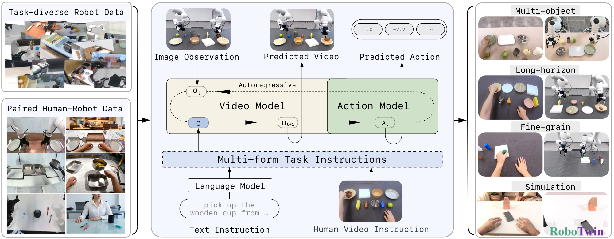
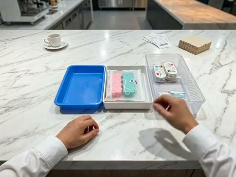

Task-diverse
Robot Data
Robot Data
In-context learning (ICL) enables robot policies to perform unseen tasks from a human demonstration video without task-specific training. However, existing evaluations rely on curated videos closely matched to the robot's workspace. We ask whether these policies can follow casual, everyday recordings and adapt to changed execution conditions. To this end, we introduce DemoShift-Bench, which pairs real human recordings with manipulation tasks and applies controlled shifts along five axes: camera viewpoint (top-view, third-person, and handheld), execution speed (2× or 0.5×), distractors in the demonstration or scene, specification (repetition, collision avoidance, or arm selection), and cross-modal conflicts between video and text. Evaluating both ICL policies and frontier agentic vision-language model (VLM) policies on DemoShift-Bench reveals an average success drop of 12–14 percentage points under shifts and exposes three key limitations. First, earlier video-conditioned vision-language-action (VLA) policies rely mainly on text instructions rather than on human demonstration videos. Second, current ICL policies that do use the video still fail to reproduce demonstrated actions precisely, resolve object and instance ambiguity, or follow added specifications and cross-modal overrides. Third, frontier agentic VLM policies handle visual shifts, arm selection, and cross-modal conflicts far more reliably, yet they still fail to repeat tasks, avoid collisions, or adjust execution speed, and they incur high token costs.
Human demonstration videos provide such a visual interface by showing the intended interaction and its visual progression. Compared with language instructions, the examples below illustrate three complementary forms of visual task specification: grounding the intended object instance, demonstrating the required interaction with an unfamiliar object, and specifying the temporal order of a long-horizon task. Training a single policy to follow both language instructions and human video prompts strengthens its ability to generalize across manipulation tasks. Achieving this capability requires scaling semantically aligned human-robot ICL pairs. When language is insufficient, a relevant human demonstration found on the internet or provided on site can serve as an in-context prompt, allowing the policy to execute the specified task without task-specific robot demonstrations or parameter updates.
Identify the intended instance among visually similar objects.
To make this human-video ICL interface trainable at scale, we introduce DemoShift, an in-context world-action pre-training framework for zero-shot robotic task generalization.

Scaling the human-video ICL interface introduced above requires task-rich, semantically aligned human-robot pairs, which are expensive to collect manually. Robotic pre-training corpora already contain diverse trajectories with executable actions. We therefore sample tasks from these corpora, convert the corresponding robot videos into matched human demonstrations, and retain only physically plausible, task-consistent ICL pairs.

DemoShift pre-training uses two complementary data components. Task-diverse VA is constructed from five public datasets by repartitioning robot trajectories into more than 6,000 manipulation tasks and sampling them at the task level. The pipeline above constructs HumanGen, a collection of aligned human-robot ICL pairs spanning public datasets, in-house platforms, simulation, and real-world collection.
We evaluate DemoShift on long-horizon sequential manipulation and precision-demanding insertion. Both task families are difficult to specify fully in language: the former requires an exact execution order, while the latter depends on precise target configurations.
Place the silver coffee cup in the wooden basket. Place the sponge in the white tray. Place the gourd on the pink oval plate.
Move the white tabletop base to the left. Insert the green table leg into the bottom-right corner of the white tabletop, then insert the blue table leg into the top-left corner.
We evaluate DemoShift's cross-task generalization on the RoboTwin 2.0 simulation benchmark. Seven tasks are held out at the task level; DemoShift is trained on the remaining 43 tasks and evaluated zero-shot on the held-out set.
Success rate of each policy, averaged over the conditions of each shift axis. The gray block above a bar reaches that policy's success rate with the original human demonstration, so its height is the drop. The Table view lists every condition with its standard error.
| ICL policies | Agentic VLM policies | ||||
|---|---|---|---|---|---|
| Axis | Condition | Zero‑WAM | WorldScape+Caption | GPT‑6 Astra | Claude Opus 5.5 |
| Reference | Human Demo (V0, c0, E0) | 39.9±5.1 | 36.2±6.5 | 67.1±11.0 | 68.6±10.9 |
| Viewpoint | Top-View | 44.0±5.2 +4.1 | 38.1±6.6 +1.9 | 77.1±9.8 +10.0 | 74.3±10.2 +5.7 |
| Close 3rd-Person | 35.7±5.0 −4.2 | 30.5±6.2 −5.7 | 72.9±10.4 +5.8 | 62.9±11.3 −5.7 | |
| Distant 3rd-Person | 36.6±5.0 −3.3 | 43.8±6.7 +7.6 | 68.6±10.9 +1.5 | 75.7±10.0 +7.1 | |
| Handheld Moving | 34.3±5.0 −5.6 | 38.1±6.6 +1.9 | 62.9±11.3 −4.2 | 67.1±11.0 −1.5 | |
| Speed | 2x Speed Instruction | 4.9±2.3 −35.0 | 17.1±5.1 −19.1 | 44.3±11.6 −22.8 | 34.3±11.1 −34.3 |
| 0.5x Speed Instruction | 10.9±3.3 −29.0 | 8.1±3.7 −28.1 | 20.0±9.4 −47.1 | 18.6±9.1 −50.0 | |
| Distractor | In Demo | 36.0±5.0 −3.9 | 35.2±6.5 −1.0 | 61.4±11.4 −5.7 | 70.0±10.7 +1.4 |
| Object Ambiguity (Seen) | 30.9±4.8 −9.0 | 28.1±6.1 −8.1 | 64.3±11.2 −2.8 | 70.0±10.7 +1.4 | |
| Object Ambiguity (Unseen) | 32.6±4.9 −7.3 | 30.0±6.2 −6.2 | 60.0±11.5 −7.1 | 62.9±11.3 −5.7 | |
| Instance Ambiguity | 19.4±4.1 −20.5 | 10.0±4.1 −26.2 | 52.9±11.7 −14.2 | 70.0±10.7 +1.4 | |
| Specification | Repeat | 2.9±1.8 −37.0 | 0.0±1.8 −36.2 | 28.6±10.6 −38.5 | 42.9±11.6 −25.7 |
| No Collision | 10.0±3.1 −29.9 | 1.0±1.3 −35.2 | 8.6±6.6 −58.5 | 12.9±7.9 −55.7 | |
| Arm | 32.3±4.9 −7.6 | 29.5±6.2 −6.7 | 70.0±10.7 +2.9 | 64.3±11.2 −4.3 | |
| Cross-Modal Conflict | Random Video | 23.1±4.4 −16.8 | – | 65.7±11.1 −1.4 | 62.9±11.3 −5.7 |
| Random Instruction | 41.7±5.2 +1.8 | – | 70.0±10.7 +2.9 | 64.3±11.2 −4.3 | |
@misc{demoshift2026,
title = {DemoShift-Bench: Are In-Context Learning Robot Policies Ready Beyond Curated Demonstrations?},
author = {TODO},
year = {2026}
}